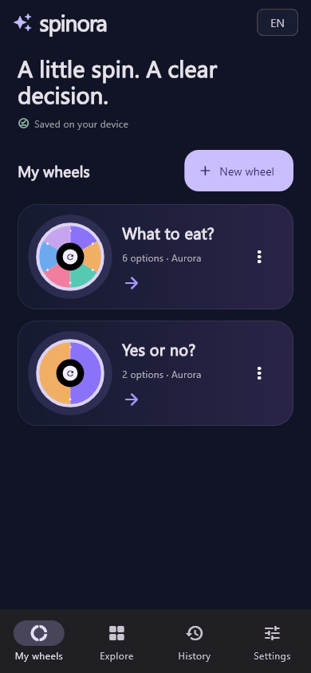
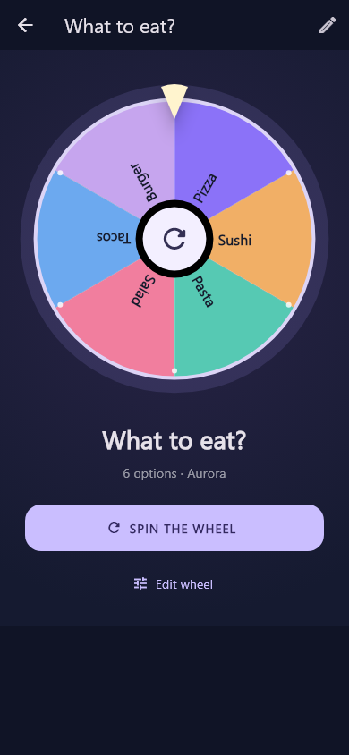

PRAXIS SCIENCE LAB / ANDROID
Spinora
Create colorful decision wheels, spin your options and save the results.
In testing Not yet available on Google Play.
A little spin. A clear decision. Spinora helps you choose between everyday options with a customizable decision wheel. Create wheels with 2–50 equally likely options, save them on your device and spin whenever you need a choice.
Start with a template for meals, yes or no, colors, weekend plans, numbers or a break. Customize slice and text colors, bold, italic and underline styles, or add an image from your gallery. Reorder options, paste a list, duplicate a wheel and choose from four themes and three result sounds.
Set a spin duration from 3 to 10 seconds. Keep the latest 200 results in local history, spin again or remove the selected option while keeping at least two options on the wheel. The interface adapts to phones and tablets.
The app opens in English and also supports Romanian and Spanish. Wheels work offline without an account. Optional Google demo ads can be enabled in Settings; they are off by default and do not generate revenue. Commercial advertising is not configured.
Spinora is currently a development version under testing. Google Play availability, final branding and release materials are still being prepared. Published by Praxis Science Lab.
Interface preview
Rendered from the development app interface, version 0.1.0 (1). These previews are not Google Play screenshots.


Language
English by default. Choose English, Română or Español in Settings → Language. Existing saved wheel text stays as you wrote it.
Using the app
Use Spinora for everyday choices and activities. Every option has an equal chance. Long labels are shortened on the wheel and shown in full in the editor and result. A development build is available for local testing; there is no public Google Play installation link yet.
Praxis Science Lab is the publishing brand used by Traian Anghel. For support or privacy questions, email traiananghel@gmail.com. Include the app name and version. Do not send passwords, medical records, private recordings or other sensitive information.